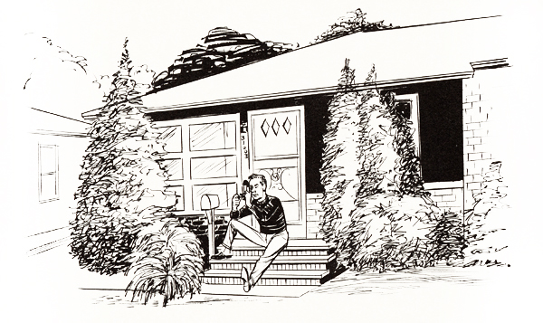
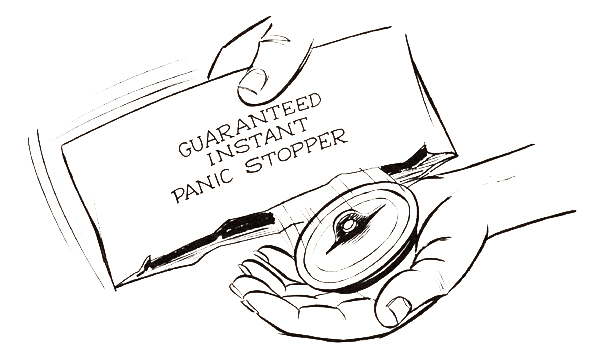

"TINKERBELLE"
Chapter 4
Sailors have seldom been envied by confirmed landlubbers and, until recent times, with good reason. Their lives were hard and usually short.
Boswell reported in 1759 that Samuel Johnson said: "No man will be a sailor who has contrivance enough to get himself into jail; for being in a ship is being in jail with the chance of being drowned. A man in a jail has more room, better food, and commonly better company." This was a widely held view in those days, I imagine, because the conditions under which seamen existed were so atrocious that press gangs often had to be employed to fill out the crews of naval ships; and once a man was pressed into service he usually did not escape, except through death.
About a hundred years later Ralph Waldo Emerson echoed Johnson's opinion. Writing of a voyage he took to England in 1847, he said, "The wonder is always new that any sane man can be a sailor." He was referring to the sailor's "life of risks, incessant abuse and the worst pay," for conditions at sea hadn't improved greatly in a century.
Nowadays, of course, few persons talk this way about life at sea, either in the merchant marine or in the navy. The lot of today's seafarers is so much better that it bears scarcely any resemblance to the lot of seamen of Emerson's or Johnson's time. The impressment, harsh discipline, bad food, outbreaks of scurvy and brutalizing environment of the old, old days are gone. Yet, while life aboard a commercial freighter or naval battleship is no longer regarded with horror, a rather large segment of the landbound population (at least in the United States) now looks askance at a
new breed of sailors-those who go down to the sea in small pleasure boats. With Emerson, this group wonders how any sane man can do such a thing.
The reason for the attitude today is, I suppose, compounded of a fear of deep water and the widespread thumb-rule judgment that a vessel's safeness depends on its size-the bigger the safer.
Although I hadn't conducted any private opinion polls, I had learned enough in the course of everyday living to have a fairly good idea of the reaction I would get if I let it be known that I planned to sail across the Atlantic in little Tinkerbelle. I could plainly see the raised eyebrows and hear the expression of alarm such a confession would produce among my Plain Dealer associates and Willowick neighbors. I wouldn't have minded if that had been all, for these things couldn't have hurt me or my family. What did worry me, though, was the possibility that some well-intentioned person who knew nothing about boats or the ocean, but who had an unreasoning fear of both, would go to work on Virginia and try to convince her that, for my own good, she should refuse to give the voyage her blessing. I'm sure Virginia would have withstood such pressures admirably, but at the time they would have made her life a great deal more difficult, psychologically, than it needed to be, and I didn't want that.
So I engaged in a deception for which I hope the good Lord and my friends will forgive me. I let everyone continue thinking I expected to cross the ocean with another man, in his 25-foot boat, and whenever anyone inquired about our plans I answered as if a voyage in the large boat were still in prospect. Actually, almost all the planning I did for the voyage in Tinkerbelle was the same as it would have been for a voyage in the bigger craft (except that the provisions were reduced by half), so the amount of fabricating I had to do was minimal. It consisted mainly of simply allowing a false impression to remain uncorrected.
I started my studying and planning with the determination that if at any time prior to
embarkation I encountered a difficulty of such magnitude as to be what I considered a serious threat to success, I would decide against attempting the voyage. I was resolved not to let foolish pride sweep me into a bad situation or, being in one, make me continue in it to the bitter end. For my family's sake as well as my own I refused to be concerned about loss of face, for I considered it far better to be a live coward than a dead hero.
What I had to do first of all, it seemed to me, was to determine as precisely as I could the nature and full extent of the hazards to be expected on a transatlantic voyage, and then, once this was done, come to a levelheaded decision as to whether or not these hazards were surmountable. If they weren't, I'd simply have to go back to being a copy-desk Walter Mitty, at least until another, more propitious opportunity for oceanic adventure came along.
The weather was the first major hazard to be reckoned with. I knew from reading about other voyages and from studying the marvelously informative pilot charts of the North Atlantic issued by the U.S. Naval Oceanographic Office that the summer months were best, but I lacked more precise information. I wrote to the U.S. Weather Bureau in Washington and the summaries it sent me, while still not so detailed as I had hoped for, were most encouraging. They contained sentences such as these: "The weather of June is usually very pleasant over the North Atlantic. The wind speeds average force 3 to 4 over most of the ocean. Gales are infrequent. Weather conditions are relatively settled during July with buildup of the Azores high. Wind speeds average 10 knots or less 40 to 60 percent of the time."
Then I ordered, from the Naval Oceanographic Office, an Oceanographic Atlas of the North Atlantic Ocean and a book entitled Wind Waves at Sea and these gave me all the information I was looking for, as precisely as was feasible. I learned that the highest wave ever reliably reported was a monster a hundred and twelve feet high
observed from the U.S.S. Ramapo in the North Pacific in February, 1933, and that the highest waves seen in the North Atlantic were sixty-footers, also observed in the winter. The Atlas yielded the prediction that on a transatlantic voyage lasting through June, July and August I would have approximately two days of waves twelve feet high or higher, about four days of eight-to twelve-foot waves, about nine days of five- to eight-foot waves, and smaller waves the rest of the time. It also forecast roughly four days with winds of twenty-eight knots or stronger, eighteen days of seventeen-to twenty-seven-knot winds, nineteen days of eleven- to sixteen-knot winds and weaker winds on the remaining days, with nine or ten days of calm.
Tinkerbelle already had taken six-foot waves and about thirty-knot winds on Lake Erie without having to heave to and I was confident that, hove to, she could survive conditions that were far more severe. I realized, of course, that the Oceanographic Office statistics were averages that wouldn't necessarily hold true for a given summer; there was always a chance one of those infrequent storms would strike. Red tracks on the pilot charts showed that storms had crossed my proposed trans-atlantic course in the summers of 1952, '54, '55, '56, '59 and '60, so the probability seemed to be much greater than fifty-fifty that I would take either a head-on or a glancing blow from a storm. Still, I was confident my little boat would acquit herself well, especially since I planned to make her unsinkable. I won't say I believed she could live through a hurricane, but I did believe she could take a terrific amount of punishment.
Many small-boat voyagers have stated in their books that size has little or no bearing on a boat's seaworthiness and, visualizing conditions at sea in a storm, I was inclined to believe they were right. A small boat, first of all, is a great deal stronger, pound for pound, than a big ship. Secondly, a small boat, being light and buoyant, will recoil before the waves and tend to ride over them, whereas a big ship will offer immense resistance.
The predicament of a big ship in a storm is that of an almost irresistible force meeting an almost immovable object; something is likely to give, and fairly often it is the rivets or plates in the big ship's hull. That is why big ships are sometimes battered and broken, even sunk, by storms that do no more than cause a few hours' inconvenience to properly handled small boats.
So far so good. But what about the differences between my boat and other sailboats less than, say, twenty-five feet in length? Would Tinkerbelle equal them in ability to weather a storm?
It seemed to me that the Achilles' heel of the usual ocean-going yacht was its keel, a thick slab of iron or lead that, in some boats, weighed more than a ton. The purpose of this weight was to keep the boat sailing right side up, a most worthy objective. But what if the boat sprang a bad leak or through some other misfortune filled with water? It would sink to the bottom like a lead casket.
As I saw it, the prime function of a boat was to float, and, preferably, to go on floating no matter what calamities befell it. For even if its sails were torn, its rudder lost, its mast broken, even if it capsized or had its planking ruptured, those aboard it would have a fighting chance to stay alive as long as it continued to float. So, to insure that Tinkerbelle would remain afloat (with me and all my supplies and equipment on board), I filled the spaces between her deck beams with polyethylene-foam flotation material and, in addition, made five or six thick planks of the material to be packed inside the hull with my supplies. Of course, the boat and all my gear had to be weighed to make certain the total weight didn't exceed the buoyancy factor of the flotation material, but when all this was accomplished, I had a vessel that was virtually unsinkable. And that contributed greatly to my peace of mind.
I came to the conclusion that the dangers posed by the winds and the waves had been successfully neutralized; that there was nothing about them to make me give up my plan. This meant, to me, that the biggest single obstacle to the voyage had been hurdled.
Then it occurred to me that next in importance to the assurance of staying afloat was the assurance of being able to call for help in case of need, so I bought a surplus Air Force "Victory Girl" distress-signal transmitter, a neat little waterproof gadget that, on being cranked, automatically sent out SOS signals on two frequencies. One of these, 500 kilocycles, the marine distress call frequency, had a range of a little more than a hundred miles; the other, 8364 kilocycles, the aircraft distress channel, had a range of about fifteen hundred miles, which was far enough to reach shore from the middle of the ocean.
Taken together, the guarantee of staying afloat and the guarantee of being able to summon aid, if necessary, seemed to me to eliminate or reduce most of the risks of the voyage. A lot of things could still go wrong, certainly, but the likelihood of their being fatal was now slight. Consequently, from this point on, my preparations went full steam ahead.
The next biggest problem, the danger of being run down by a big ship while I was asleep, was disposed of much more easily. I would prevent this from happening by, insofar as possible, staying away from the regular shipping lanes, all of which were clearly marked on the pilot charts. Where it was impossible to stay clear of these lanes, while crossing them near New York and at the entrance to the English Channel, I would stay awake, with the aid of pills if necessary, until I was safely into the un-traveled sea beyond.
O.K. Next problem.
What about navigation? It was obvious that simply by sailing east I was bound to fetch up, sooner or later, somewhere on the western coast of Europe but I hope I could be a little more accurate about my landfall than that. I wanted to sail to England. It would be mortifying if, instead of landing there, I landed in France or Spain or Portugal or Ireland. It was essential that I learn the rudiments of celestial navigation, a subject
whose very name filled me with dread, for as a mathematician I was a great tennis player. Calculus, spherical geometry and related areas of mental torture were distinctly not my forte. I was the sort of guy who, in college, had had to take high-school algebra.
But as it turned out navigation wasn't the bugaboo I had thought it was. Some wonderful, anonymous men had taken all the pain out of it by producing a book of
 |
logarithmic tables called H.O. 214, which reduced all the required calculations to simple addition and subtraction. And add and subtract I could, just.
So, armed with George W. Mixter's Primer of Navigation, Carl D. Lane and John Montgomery's Navigation the Easy Way, H.O. 214, the Nautical Almanac, charts on which I could pinpoint the position of our home and a surplus Air Force sextant, I set out to teach myself how to guide a boat from one port to another across the trackless, roadless, signpostless sea. And I did it on our home's front porch.
My sextant could be used either with the natural horizon or with an artificial bubble horizon. In my practice sessions I used the bubble, and the check I had on the accuracy of my calculations was the known latitude and longitude of our house. If my sun lines came close to this position, I knew my sextant sights and figuring were reasonably accurate. They didn't come close at the beginning, though. If I remember correctly, my first sight put me somewhere in the middle of Hudson Bay, Canada, hundreds of miles to the north. That was a mite alarming. If I couldn't do better than that, I might as well throw away the sextant and rely on a Ouija board. But I improved in time, happily. In the end my position lines usually came within nine or ten miles of being right on the nose and, from my reading, I gathered that that was pretty good going with a bubble sextant.
Of course, it remained to be seen whether I could do as well from a cockpit of a little boat on the bounding main, but I had the feeling I could. So I decided another difficulty had been overcome.
Next I bought a short-wave radio with which to get the time signals that were essential for navigation and to maintain some sort of contact, through news programs, with what was happening in the world ashore while I was alone at sea. I also hoped musical and entertainment programs would help me while away some of the hours I'd have to spend at the tiller.
I had an idea sharks wouldn't bother Tinkerbelle or me, as long as I stayed out of the water (and I planned, in any case, to take along chemical shark repellant), but I was a little concerned about what whales might do. I knew of several lone voyages whose boats had been damaged by whales and also two instances of real-life Moby Dicks having sent large whaling vessels to the bottom. In November, 1820, the Nantucket whaler Essex was attacked by a whale in the Pacific and sunk, thus providing a model for the climax of Melville's novel. And in August, 1851, while the novel was at the printer's, the Ann Alexander of New Bedford was done in by a whale, also in the
Pacific. I didn't enjoy contemplating what might happen if an enraged whale were to assault my miniature sloop and yet I couldn't decide what I might do to guard against such a catastrophe. The best plan I could devise was to blast away on the compressed-gas foghorn I expected to carry with me and to put my faith in the theory that an animal won't bother you if you don't bother it.
One danger at a time, I tried to think of every conceivable misfortune that could beset us and to contrive a way of taking the sting out of it. What if lightning struck? I put a lightning rod at Tinkerbelle's masthead and grounded it through the shrouds to a hefty copper plate on her bottom. What if a wave washed me overboard? I rigged a lifeline to prevent my being separated from the boat. What if the rudder broke or was somehow lost? I built a spare rudder and, in addition, bought spare gudgeons and pintles. What if the hull was damaged or the mast broken? I assembled a complete tool kit and a supply of lumber of various types and sizes with which to make repairs. What if the boat capsized? I bought an inflatable life raft and figured out a way of using it, with a line running from it to the sunken masthead, to right the boat. What about my health? I had a complete medical checkup (in fact, I had two) and passed without any ifs or buts. What if my water supply was spoiled or lost? I bought a solar still for converting sea water into fresh water. What if my food supply didn't last? I acquired an extensive fishing outfit. What if my SOS transmitter failed? I collected flares, signaling mirrors and dye markers. What if something forced me to abandon Tinkerbelle and take to the life raft, how would I stay alive? I studied survival techniques perfected by the Navy and put together a complete survival kit, including emergency food and water. What if I was becalmed in the path of a ship? I took along a radar reflector to make my presence known to ships equipped with radar and also took along oars with which to row out of the way. (I decided against taking our little 1.7-horsepower outboard motor,
or any other outboard. I couldn't have carried enough fuel to make it worth while.) What if the sails were badly torn? I got together a sail repair kit and spare sails; in fact, I bought a red nylon mains'l to make the boat as highly visible as I could. What if a shroud parted, the stem plate gave way or something else broke? I bought replacements for every piece of equipment that was under strain. What if I became ill or suffered a serious injury? I put together a complete kit of medical supplies, including antibiotics, disinfectants and pain killers, with the help of a Cleveland physician and pharmacist.
What about appendicitis? I knew that this malady had almost brought William A. Robinson to grief while he was cruising among Galapagos Islands off the coast of Ecuador and I certainly didn't want to go through the same ordeal. However, I felt the chance that my appendix would act up was so remote that I didn't need to have it taken out in advance. If it did act up. I hoped to be able to keep the infection under control with antibiotics until I reached help.
And so it went.
In the summer of 1964, before the planning had gone very far, Douglas, then ten, and I took a cruise on Lake Erie that was the longest voyage yet for Tinkerbelle. We sailed in easy stages from Cleveland's Wildwood Park to Thunder Bay, Ontario, Canada (seven miles west of Buffalo, New York) covering more than two hundred miles. This was a trial voyage for me, in preparation for the assault on the Atlantic, and it made me more confident than ever of Tinkerbelle's capability. In a thunderstorm one day she ran up against stiff, squally winds and the biggest waves she had yet encountered, white-crested rollers six to eight feet high. The spirited way in which she rode the waves made me more optimistic than ever about the Atlantic venture, especially when I remembered having read somewhere that Howard Blackburn of Gloucester, Massachusetts, a former Grand Banks fisherman who had lost the fingers of both hands
through frostbite and yet had twice taken small boats across the Atlantic, believed the sailing he had once experienced on Lake Erie was more dangerous than anything he had met on the ocean.
I began in January, 1965, to gather food supplies from widely separated sources: dehydrated meat bars from Chicago; components of Army C rations from Council Bluffs, Iowa, St. James, Minnesota, and Dawson, Georgia; canned white bread and fruitcakes from Nashville, Tennessee, and cereal bars, dehydrated eggs and a number of other items from Newton, Massachusetts. Most of the food was purchased at neighborhood grocery stores, however, and all of it was acquired with an eye to easy preparation of meals. I didn't want to spend much time cooking, so practically all the food was precooked. It needed only to be warmed, or, if I was hard pressed, it could be eaten cold. I had a little canned-heat stove in gimbals, a frying pan, a saucepan and a knife, fork and spoon with which to prepare and eat my victuals. And, naturally, I had a can opener; in fact, several of them.
A few weeks later, when I broke the news of my proposed voyage to my mother, one of her great fears was that I would forget to take a can opener and would find myself out on the ocean with plenty of food, but with no way of breaking into the cans to get at it. She was relieved to hear I was taking precautions to avoid this catastrophe.
Acting on the principle that it is unwise to put all one's eggs into one basket, I decided to carry twenty-eight gallons of water divided among forty half-gallon plastic bottles, three one-gallon plastic bottles and one five-gallon plastic container. By doing this I hoped to prevent any mass loss or spoilage and to facilitate keeping track of my water consumption. And, by refilling emptied bottles with sea water, I hoped to maintain most of the boat's inside ballast. According to the usual allowance of half a gallon a day I had enough water to last fifty-six days. However this was supplemented by numerous cans of fruit juice and carbonated drinks, plus a supply of canned water in
my survival kit, so I felt it was adequate. Besides, I knew from experience that my consumption of water would be far less than half a gallon a day. And if I did run short, I could use the solar still to make more, or catch rain water in a sail.
I expected the voyage to take about sixty days, but guessed that it might possibly take as long as seventy-five days so, to be on the safe side, collected enough provisions to last a minimum of ninety days. Other west-to-east crossings of the Atlantic had taken between twenty-two and a hundred and twenty-three days, which indicated to me that my estimate of the trip's duration was reasonably realistic.
One point about my food supply worried me. How would I protect all those cans from the corrosive sea water? The contents of any cans that rusted through would spoil very quickly so that, if worst came to worst, I might be reduced to living on fish and plankton, a prospect that didn't appeal to me in the least. Some earlier voyagers had protected their cans of food by noting the contents on each one with paint or indelible ink, removing the labels and then varnishing the cans thoroughly. This method, I felt, had now been made obsolete by the introduction of plastic materials; so I packed my food supplies into heavy plastic bags sealed shut with a hot iron, two bags containing the food required for one day. Each week's supply of food was then packaged in a larger plastic bag, which, in turn, was put into a protective canvas bag. I had eight of these large bags of food, enough for two months at sea, with enough additional food in the form of emergency rations to last more than another month. As all these preparations neared completion, I began to feel confident that, no matter what my other misfortunes might be, I would at least have plenty to eat.
My provisions included two canned plum puddings Virginia had got me, with hard sauce to go with them, and my plan was to eat one of these when I reached the halfway point of the voyage and the other when I reached England. These little celebrations,
I thought, would give me something special to look forward to.
As spring arrived, my preparations moved ahead more quickly. I wanted extra insurance coverage during the voyage so that if by some unlucky stroke of fate I lost my life Virginia and the children would be protected. I wanted to be sure of funds for the children's education and Virginia's future.
In applying for this insurance I, naturally, revealed my real intention of sailing in Tinkerbelle, and I was distressed to find that Lloyd's, which reputedly stood ready to insure anything, wouldn't insure me. That gave me a bad jolt, for it made me feel I wouldn't secure coverage anywhere. But then two other companies, apparently impressed by my knowledge of previous voyages, extensive preparations and the emphasis I put on safety factors, decided to risk rather large sums of money on me. Each of them insured me for twenty-five thousand dollars at a premium of two hundred and fifty dollars; so, in effect, they were betting a hundred to one that I'd make it. That encouraged me greatly, for it meant that if I was lost at sea Virginia would receive fifty thousand dollars over and above the insurance we already had and it also meant that a couple of hardheaded business organizations had enough faith in me to regard my voyage as something more than a harebrained stunt.
By this time my close relatives had been told of my planned expedition in Tinkerbelle (all of them being sworn to secrecy) and, on the whole, they took the news calmly. My father and father-in-law were no longer living, but, had they been, I believe they would have given me their blessing. Virginia's mother accepted the project with good grace, and my own mother wrote, "Of course, your letter made me catch my breath; I am sure you can understand. But I can understand the urge within you to do this thing, and this will be your adventure of a lifetime!" Later I learned that her greatest fear was that the loneliness of the ocean would drive me insane, a possibility that, I confess, hadn't even occurred to me.
One of my sisters, Dorothy Dole, also was concerned about the loneliness, but believed I would be able to endure it without ill effects. In a letter to my mother, my other sister, Louise, said: "At first I couldn't take it [the planned voyage] in, it seemed incredible, and then I became very excited about it. I can't say that I really understand it; it's something I think we'd all like to do in the abstract, but when it gets to actuality, most of us draw back. The main thing I feel is that it is wonderful to see someone carry out his dream-so few of us get or take the chance. And Robert is a dreamer." I'm not sure the characterization dreamer was meant entirely as a compliment, but I was pleased to hear that Louise believed in the pursuit of dreams.
My brother, John, and Virginia's brother, John, also gave their full support, each of them having yearned at one point in their lives to take a voyage such as I was planning. They offered many good ideas for making the trip safer and more comfortable and even assisted in more tangible ways. One bought me some excellent waterproof bags in which to store books and film, and the other presented me with a wondrous little contrivance-a hand warmer.
My colleagues on the Plain Dealer, still believing I was going with someone else in a boat nearly twice the length and several times the weight of Tinkerbelle, offered all their good wishes as well as innumerable helpful or humorous suggestions. During our supper hour from nine-fifteen to ten-fifteen every night we frequently gathered in the paper's cafeteria and discussed the voyage. I remember one night someone brought up the possibility of our meeting icebergs. And then someone else, recalling the Titanic disaster, suggested that we'd better take along a phonograph and a recording of "Nearer My God to Thee" to play if the occasion arose.
"You at least ought to write down the words of the hymn," said Ted Mellow, the P.D.'s news editor, "so you'll be able to sing it as you go down."
Ted also secretly solicited contributions from my companions on the copy desk and used the money to buy a bottle of brandy to be taken on the voyage "strictly for medicinal purposes." The bottle was presented to me in a ceremony that left me all choked up. I was deeply moved, partly because I thought Robert Havel, chief of the copy desk, had called us together to chastise us for lousy headlines we'd been writing or for some other dereliction. It was indeed a pleasant surprise to receive liquor instead of a licking.
"You'll need that stuff in case of snake bite," said Robert Murphy, one of my fellow rim men.
"Yea," chimed in John Metcalfe, my neighbor on the rim. "But don't do like the doctors and drink all the medicine yourself."
The bottle had been prepared to render valuable service in a moment of crisis, as an auxiliary communications device. Directions affixed to it said, "In case of emergency: 1. Remove contents. 2. Insert message. 3. Launch." It was thoughtful of my friends to be so concerned about communications.
On another occasion Walter Berkov, an assistant news editor, and I were talking about the voyage and I happened to mention that I'd cross the Rubicon (that is, make a firm decision about going) in April.
"You mean you'll cross the Styx, don't you?" said Walt.
"No," I replied, with what I imagined was exactly the right inflection for a debonair adventurer to use, "I won't do that until June or July at sea."
Not long after this, at about 12:45 A.M. when our night's work was done, I happened to walk out to the P.D. parking lot with Chet Downing and Charlie Mulcahy, two more of my copy-desk friends, as we set off for our respective homes.
"All ready for your voyage this summer?" Charlie asked.
"Just about."
"I've got to admire your fortitude," Chet said.
"Yes, I do, too," Charlie agreed, adding, "I wouldn't do what you're doing for a million
dollars. I'm afraid of water. Why, I'm even scared to look down in the shower!"
I enjoyed the remark hugely and later, on the ocean, I occasionally conjured up a picture of Charlie standing in the shower, terrified, and it always made me chuckle.
In April, as I'd said I would, I crossed the Rubicon with a firm "On we go," and then, in what seemed to be scarcely enough time to turn around, it was May 1st and I was up to my neck in last-minute preparations. I had already gathered all the necessary charts, pilot books, light lists and so on, but I still had to get a passport and a smallpox vaccination, fill out a voyage plan and check-off list and have a signed disclaimer statement notarized for the Coast Guard, fit a bilge pump to Tinkerbelle and do a number of other chores. Every minute away from my job was spent attending to these details.
The plan was for my mother to come from her home in Warner, New Hampshire, on Saturday, May 15th, to be with us for a week before my departure. She would remain to care for Robin and Douglas, whose vacations from school were still two weeks away, while Virginia and I and Virginia's brother set out on Sunday, May 23rd (the day my leave of absence from the Plain Dealer began), to drive with Tinkerbelle to Falmouth, Massachusetts. After two or three days of exploring about Cape Cod and launching and loading the boat, John and Virginia were to return with the boat's trailer to Willowick. (Before setting sail I wanted to be sure Virginia reached home safely through the heavy pre-Memorial Day highway traffic.) Then, on June 1st, Tinkerbelle and I would begin our transatlantic adventure.
My mother arrived on schedule on May 15th, at the beginning of what I'm sure was one of the most hectic weeks of her life; but she endured it with good cheer and before we knew what had happened we began what was to be my last day of newspapering for some time to come.
That morning, in anticipation of the coming weeks at sea, I had the local barber
give me a close-cropped butch haircut. I hadn't worn my hair in that style since my Army days and the reaction to it was mixed. Virginia didn't like it because, she said, it reminded her of the haircut a condemned man receives before he is strapped into the electric chair. And John Hilton, an Englishman who had joined the Plain Dealer copy desk six or eight months before, didn't like it either (Englishmen being partial to longish hair).
"They'll never let you into England with that haircut," he said.
Gerry Lee, sitting across the copy desk from me, didn't particularly mind the haircut, but, molding his features into an expression of grave concern, he made the sign of the cross as he said, "Old man, you look as if you've already got a touch of scurvy."
During the supper-hour break, when the copy-desk crew adjourned to the cafeteria, there was a lot of kidding about my having my last supper; and, with a knowing nod in my direction, William Evans, a police-beat reporter, remarked, "Some people will do anything to get out of writing headlines."
Copy editors, of course, are irrepressible punsters and many puns were exchanged that night. I've forgotten most of them, but I do recall that someone asked why they have knots on the ocean and, before I could reply, someone else broke in with "Because if there were no knots, they couldn't have the ocean 'tide.'"
Later on, when we returned from supper and were hard at work again, Russell Bacon, the desk's acknowledged master punster, quietly slipped me a note that injected a pun into a friendly bon-voyage message. It said, "May the Atlantic surfeit your greatest hopes." Bacon, now retired, was one of the kindest men I've known. In addition to doing many other favors, he introduced me to a lotion that, during the voyage saved my hands from the worst effects of prolonged contact with salt water.
La Rue Daniels, the P.D.'s expert on dogs and horses, presented me with a lucky
twenty-five-cent piece to take with me, and my good friend Metcalfe, whom I have already mentioned, gave me the snappiest yachting cap I have ever seen, as well as what he described in a typewritten note as "a guaranteed instant panic stopper," an item I might need desperately in the days ahead. On being unwrapped, this extraordinary contrivance, dangling from a string, turned out to be a battered, worn, decidedly
 |
secondhand bathtub plug. It served its purpose well; and so did the twenty-five-cent piece.When quitting time rolled around, I was deeply touched by the sincerity with which my colleagues shook my hand and wished me a pleasant voyage. It made a lump rise in my throat to have these men with whom I had worked for so long, through torrents of written words, express genuine concern for my welfare. Some were so overcome with emotion they couldn't speak, and a few, I think, were convinced they would never see me again. I felt uncomfortable about being the cause of such intense concern and yet how much more concern there would have been if they had known I was about to set sail in a 13 ½ -foot boat rather than a 25-footer.
When I went to bed that night, on the eve of departure for Falmouth, I felt that I'd probably done the right thing after all to keep the true nature of my voyage a secret.
TABLE OF CONTENTS | NEXT CHAPTER